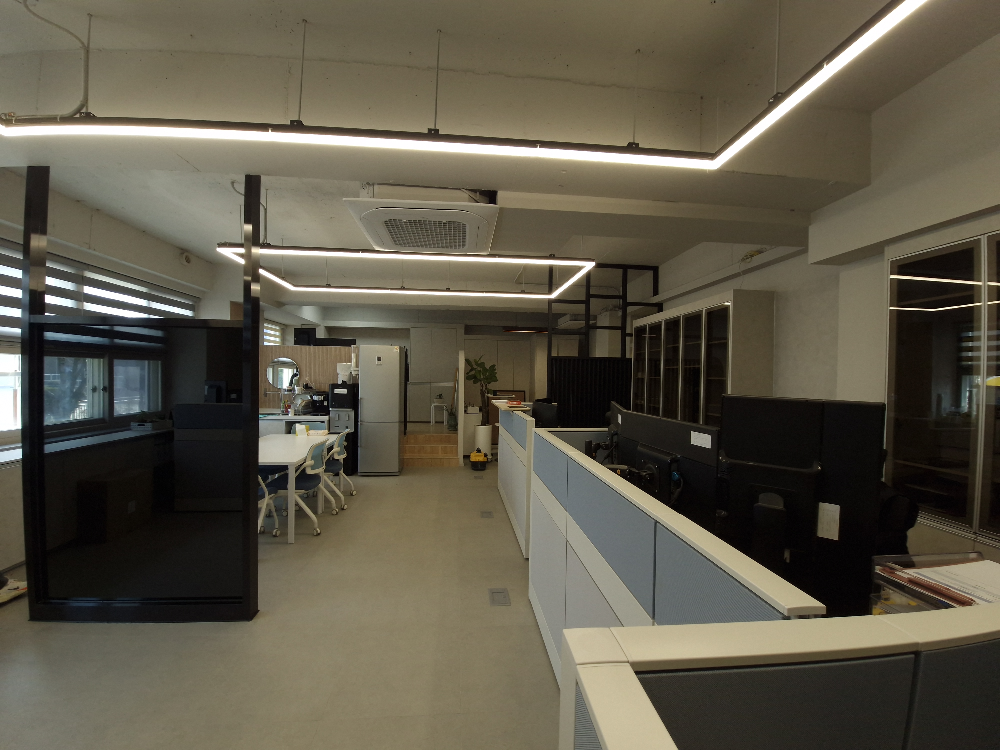
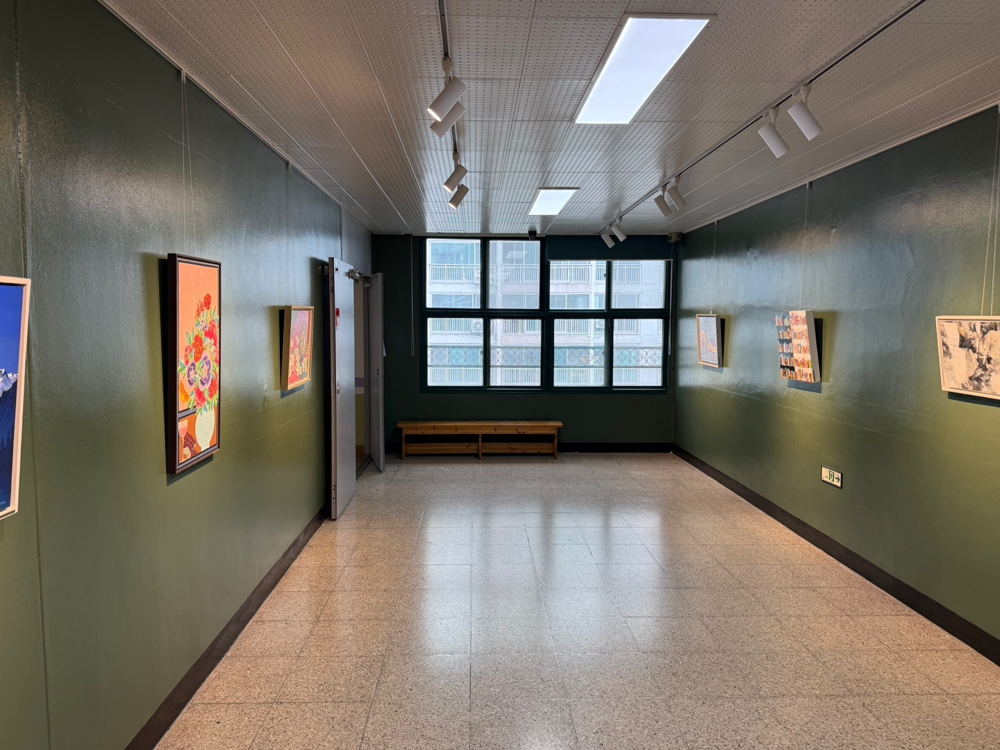

KYEOL
Interior Design & Construction
SELECTED PROJECTS
남원 수지초 도서관
Educational Space

덕암정보고 행정실
Office Space
IN THE MAKE UP
Beauty Salon

서일초 작은미술관
Gallery Space
파벽돌 조적 시공
Exterior Work
송정써미트 아파트
Residential